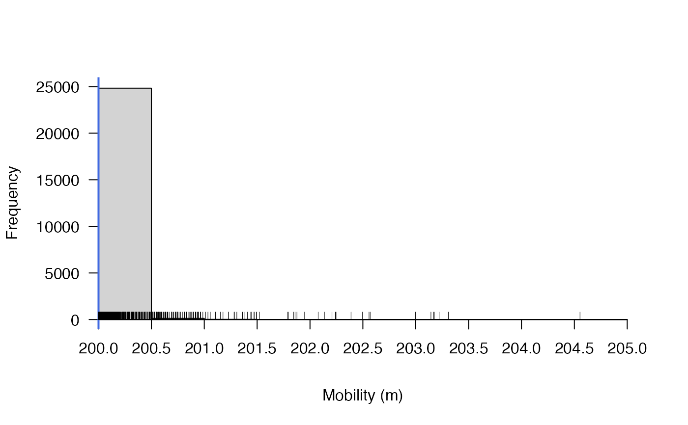
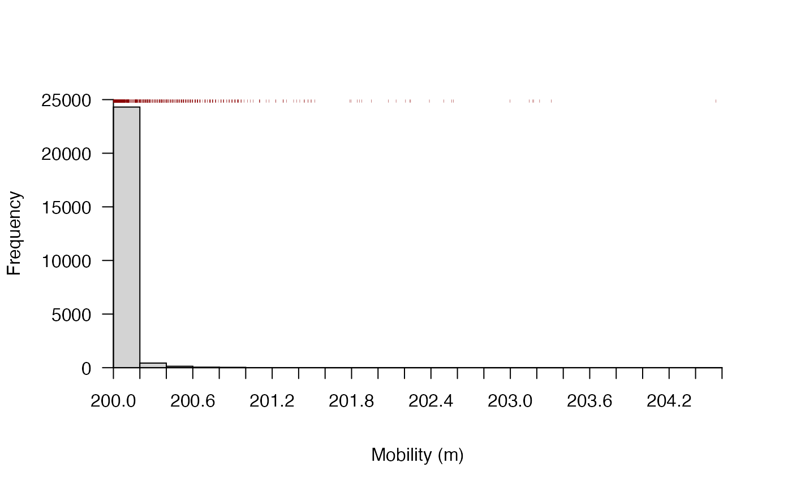
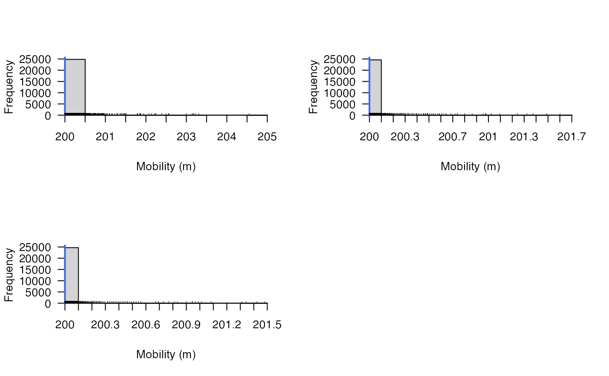

R/acs_setup.R
acs_setup_mobility.RdIn the simplest and fastest (and only) version of the acoustic-centroid (AC) and acoustic-centroid depth-contour (ACDC) algorithms currently implemented by flapper, the rate at which acoustic centroids expand and contract depends on a single `mobility' parameter that describes how the uncertainty in an individual's location changes through time according to the passive acoustic telemetry data. These changes essentially reflect the maximum horizontal distance that an individual can move in the regularised time steps between sequential detections. However, in some situations, a fixed parameter for horizontal movement may not be well supported. For instance, in cases with archival data (the ACDC algorithm), animals changes dramatically in depth and for which changes in depth are likely to curtail the extent of horizontal movement*. Thus, this function investigates the extent to which the horizontal distance an animal could travel changes through time if the mobility parameter is instead conceptualised as the diagonal distance between sequential depth observations.
acs_setup_mobility( depth, mobility, plot = TRUE, add_mobility = list(col = "royalblue", lwd = 2), add_rug = list(), xlab, ... )
| depth | A vector of depth observations, whose units match the |
|---|---|
| mobility | A number, in the same units as |
| plot | A logical variable that defines whether or not to plot the distribution of horizontal distances that the individual could travel, given its depth time series and |
| add_mobility | (optional) If |
| add_rug | (optional) If |
| xlab, ... | Additional arguments, passed to |
The function returns a numeric vector of distances and, if plot = TRUE, a histogram of those distances.
The function uses a Pythagorean approximation to estimate the \(distance\) that an individual could travel in each time step (\(t\)), given the maximum horizontal distance that the individual could move (\(mobility\)) and sequential changes in \(depth\), according to the equation:
$$distance_{t + 1} = \sqrt{mobility^2 + (depth_{t + 1} - depth_{t})^2},$$
where \(depth_{t + 1}\) for the final (\(n^{th}\)) observation is defined as \(depth_{t = n}\) and thus \(distance_{t = n} = mobility\).
*If the horizontal distances that an individual could travel are not very variable, then the benefits of a single mobility parameter are likely to outweigh the costs. On the other hand, substantial variation in the horizontal distances that an individual could travel may suggest that a constant mobility parameter is inappropriate; in this situation, the correct centroids could be computed on-the-fly within the ACDC algorithm, but this is not currently implemented. However, the particle filtering algorithms can account for this by the incorporation of movement models within/between acoustic centroids.
acs_setup_mobility, acs_setup_centroids and acs_setup_detection_kernels are used to set up the AC and ACDC algorithms as implemented by ac and acdc.
Edward Lavender
#### Example (1) Explore mobility for single individual mob <- acs_setup_mobility(depth = dat_archival$depth[dat_archival$individual_id == 25], mobility = 200)#### Example (2) Customise histogram # ... suppress plot with plot = FALSE # ... suppress add_* lists with NULL or customise # ... pass args to prettyGraphics::pretty_hist() via ... mob <- acs_setup_mobility(depth = dat_archival$depth[dat_archival$individual_id == 25], mobility = 200, add_mobility = NULL, add_rug = list(side = 3, pos = 25000, col = "darkred", lwd = 0.25, ticksize = 0.01), breaks = 25)#### Example (3) Explore mobility for mulitple individuals pp <- graphics::par(mfrow = c(2, 2)) mob_ls <- lapply(unique(dat_archival$individual_id), function(id){ acs_setup_mobility(depth = dat_archival$depth[dat_archival$individual_id == id], mobility = 200) }) graphics::par(pp)#### Results # For these sample time series, even though the animals change depth # ... (quite substantially) though time, the sequential changes in depth # ... are small and the influence on the horizontal distances that they # ... are assumed to be able to travel in the time gap between archival # ... observations is so small that a constant mobility parameter # ... is reasonable without further information (e.g., models of the underlying # ... behavioural state of the animal). However, it is still likely to be # ... beneficial to include a movement model to join locations within/ # ... between acoustic centroids for some applications via particle filtering.